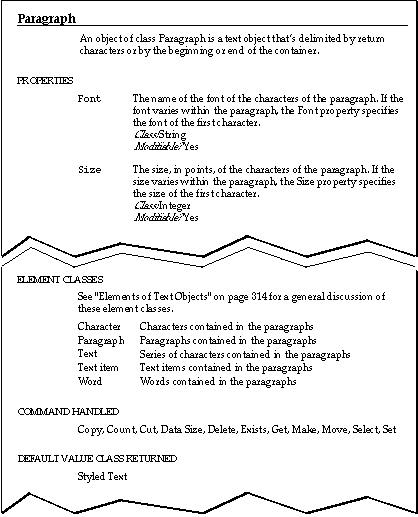

Commands Handled
Objects that belong to the same class can respond to the same commands. Object class definitions list the commands to which all objects of that
class respond.Figure 5-1 The Scriptable Text Editor's object class definition for paragraph objects

The definition in Figure 5-1 shows that all paragraph objects respond to
theCopy, Count, Cut, Data Size, Delete, Exists, Get, Make, Move, Select,commands.
and Set